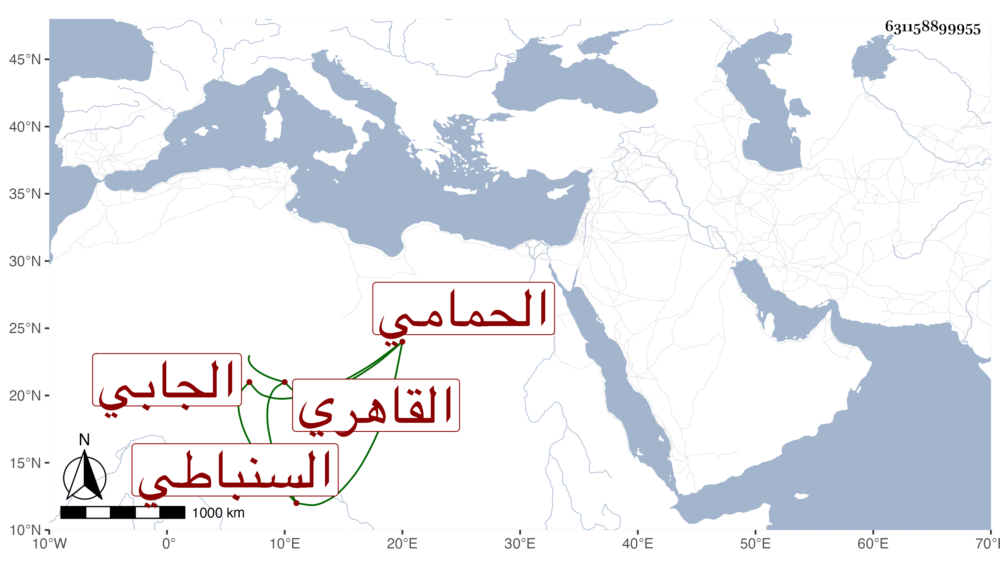

0902Sakhawi.DawLamic.ITO20230111-ara1.EIS1600.631158899955
Biography ID: 631158899955
742
عبد القادر بن علي بن محمد السنباطي ثم القاهري الحمامي ثم الجابي ويعرف بالسنباطي . كان أبوه فيما بلغني من خيار أهل القرآن فنشأ ابنه فحفظ القرآن وتكسب بالخدمة في الحمامات وقتا ثم انتمى لعبد الرحمن بن الكويز فوجهه لجباية شيء من جهاته وتدرب في ذلك ببعض أتباعه فرأى منه حذقا ونهضة وقدرت وفاة بعض جباة أوقاف الزمام فتكلم له معه في استقراره عوضه فأكرمه بذلك مجانا بعد أن أعطى من غيره نحو مائتي دينار فيما قيل ولا زال كذلك إلى أن قدمه العلمي بن الجيعان بعد السخط على ابن جبينة لصرف البيبرسية ثم لم يزل يترقى بخدمته حتى تكلم في سائر جهات الزمام وفي الصرغتمشية والشيخونية والمؤيدية ومسجد خان الخليلي والجمالية اليوسفية والفخرية القديمة ويقال لها الآن الظاهرية وما لا يدخل تحت الحصر مع المداراة والمراعاة وسلوك الأدب وبذل الهمة حتى تمول جدا واتسعت دائرته وبلغت السلطان لخدمته فلم ير بعد ذلك ضعفاء المستحقين ونحوهم ممن لا يخاف غائلتهم ما كان يعاملهم به بل ربما أسمعهم المكروه ويظهر مزيد الحاجة وضعف الجهات من كثرة ما يؤخذ منه بالرغبة والرهبة إلى أن مات في ليلة الثلاثاء خامس ربيع الأول سنة تسعين بعد تعلله بالفالج أياما ودفن من الغد بتربة بالقرب من سوق الدريس وتأسف كثيرون على فقده وما أظن يسمح الوقت بمثله فقد كان عارفا بمراتب الناس وينزلهم في الجملة منازلهم مع تجمل واحتشام وكونه من أهل القرآن والوجاهة وأظنه جاز الستين رحمه الله وإيانا وعفا عنه .
